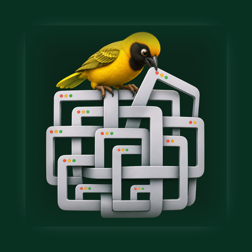

Windows that nest.
Dock windows beside each other, put splits inside splits, zoom into the part you need and back out to everything. Weaver arranges the real windows of your Mac apps. Free, open source, no account.
MIT License · macOS 14 or later · needs the Accessibility permission

Five moves.
Dock
Drag a window to a screen edge and it docks; the Desktop keeps the rest, scaled down between the docked windows.
Nest
Drop a window on another window's edge to split that cell. Splits inside splits, as deep as you like.
Tabs
Drop a window on another's middle and pause: a tab group, with windows from any apps under one strip.
Resize
Drag the gap between two windows, or a window's own edge; both neighbours give way.
Zoom
Double-click a title bar to fill the screen with that window, ⌃⌥Space for everything, ⌃⌥←→ for the neighbouring cell, ⌃⌥[ ] for back and forward.
Leave
Float a window and it returns to where it was. Quit, and every window is back in its place.
Built right.
Native Swift and AppKit. Only the Accessibility permission, used to move and resize windows and for nothing else. No network, no analytics, no account. The whole thing is on GitHub under the MIT License, so you can read it, build it and change it.
Türkçe
İç içe geçen pencereler. Weaver, Mac uygulamalarınızın gerçek pencerelerini düzenler: pencereyi ekran kenarına sürükleyin kilitlensin, başka bir pencerenin kenarına bırakın o hücre bölünsün, ortasına bırakıp bekleyin sekme grubu olsun. Aradaki boşluğu çekince iki komşu birlikte boyutlanır; başlık çubuğuna çift tıklayınca pencere ekranı kaplar, ⌃⌥Space ile her şey geri gelir.
Serbest bıraktığınız pencere eski yerine döner; uygulamadan çıkınca da her şey yerine gider. Yalnızca Erişilebilirlik izni ister, ağa çıkmaz, hesap istemez. Kaynak kodu MIT lisansıyla GitHub'da.